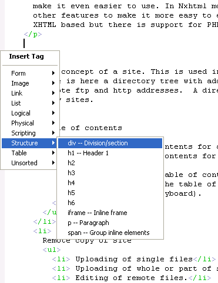

Nxhtml - an Emacs Mode for XHTML Files
Nxthml-mode is an Emacs major mode that builds on nxml-mode.
Therefore it knows about XHTML syntax and can check this as you
type. It can also tell you what tags and attributes you can use
at a certain point.
That feature, which we call completion, is the main feature of
this mode. In Nxhtml mode completion is even available in two
styles, the normal Emacs completion style or as a popup menu
(see picture)

to make it even easier to use.
In Nxhtml mode this
is combined with other features to make it more easy to edit web
sites (mostly XHTML based but there is support for PHP too):
-
The concept of a site. This is used in many places below. A
site is here a directory tree with additional properties, like
remote ftp and http addresses. A directory could belong to
many sites.
-
Table of contents
- Creating table of contents for a page.
- Creating table of contents for a site.
-
Merging of pages and table of contents for a site (see
example, notice that the table of content easily can be
navigated using the keyboard).
-
Remote copy of site
- Uploading of single files
- Uploading of whole or part of site
- Editing of remote files.
- Ediff of local vs remote file.
- Easy viewing of local and remote files in web browser.
- Link handling:
- Easier insertion of tags with links.
- Following links to edit or view.
- Moving between links.
- Moving files and automatically update affected links.
- Copy link to id location and paste it back as a relative link.
- Link checking in site (local links only)
- Support for folding.
- Editing of inlined CSS and JavaScript.
- Automatic switching between php-mode and nxhtml-mode.
- Using Tidy to convert HTML to XHTML.
- Help for XHTML tags and CSS attributes.
- Edit a fragment of an XHTML file (for blogging for example).
- Adding a popup menu to [apps] to access these features.
See also the page on EmacsWiki, http://www.emacswiki.org/cgi-bin/wiki/NxhtmlMode
How to Get Nxhtml Mode for Emacs
You can download Nxhtml Mode from the
the download
page.
Notice that if you download and
install EmacsW32 or Emacs+EmacsW32 you also get Nxhtml Mode.
However you can also download Nxhtml Mode separately.